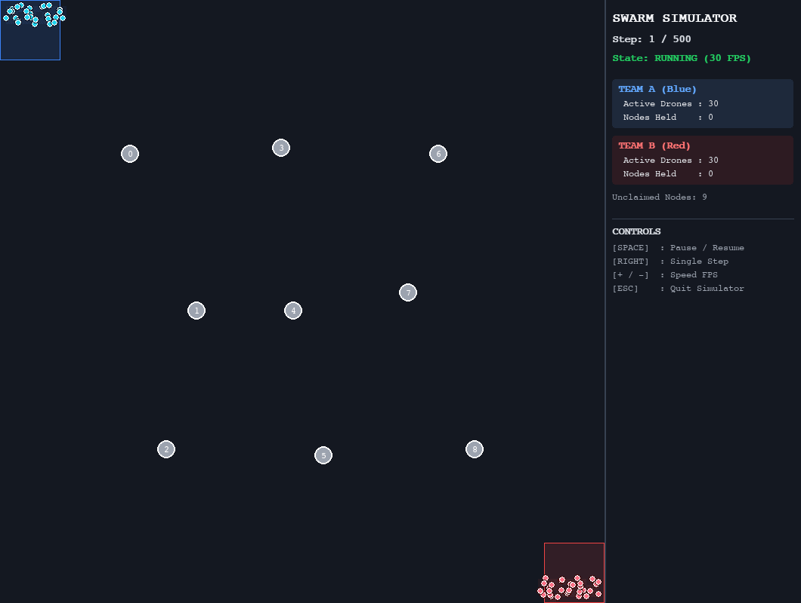

Context & Problem
Coordinating autonomous multi-drone swarms in environments without GPS and without external communications (such as ground station or operator links) requires decentralization. Centralized command-and-control (C2) architectures create single points of failure when subjected to directional jamming or electronic warfare (EW).
Biological stigmergy (decentralized indirect coordination via spatial environmental signals) provides a decentralized alternative. Continuous low-power RF telemetry broadcasts fade over time as information becomes stale, functioning as virtual pheromones. Evaluating how signal decay rates, sensor radii, and active EW jamming fields interact across parameter spaces requires empirical simulation and sensitivity analysis.
Architecture & Approach
To model decentralized coordination, I developed a 2D spatial simulation engine in Python built on dual-team signal grids (PheromoneGrid). When drones discover objective nodes, they deposit directional recruitment trails that fade exponentially over step iterations to model telemetry signal staleness. Inside active jamming sectors, localized EMI fields reduce perceived trail intensity (Iperceived = Itrue × (1 - jamming_intensity)) and attenuate exploration entropy.
Individual drone navigation is governed by a 5-tier decision tree evaluated at every step: Attack nearby enemy units within combat range, Defend threatened friendly nodes, Capture locked objective nodes, Follow Trails by climbing ascending recruitment gradients (Icand > Icurr + 0.1), and Patrol & Explore unvisited grid sectors. Objective control is managed by an N-drone T-step uncontested state machine with instant reset logic if an opposing drone enters the capture radius.
For parameter analysis, I built a multi-process experiment runner that executes headless sweeps in parallel, logging run metrics directly to CSV files. The analytical pipeline includes an automated movement stagnation detector (is_jitter_clustering) that tracks early-game spawn displacement, alongside a Matplotlib plotting module that generates sensitivity curves with confidence bands and match outcome distributions.
Key Results
- Telemetry Decay Thresholds: Simulation sweeps showed that telemetry decay rates below 0.2 cause swarm movement to stagnate at spawn, while rates above 0.5 increase capture speed, resolving matches in 150–300 steps instead of 500.
- Electronic Warfare Resilience: Directional jamming disrupts individual drone trajectories locally, but does not alter final match outcomes or team win rates, proving decentralized swarm coordination is resilient to RF interference.
- Capture Threshold Bottlenecks: Increasing the required drones per node from 1 to 10 reduced average team node control from 4.5 down to 1.4 nodes due to swarm dispersion constraints.
- Sensor Range & Resolution Speed: Expanding drone sensor range from 8 to 20 grid cells significantly increased exploration speed and reduced match resolution time across all seeds.
Strategic & System Takeaways
- Decentralized Stigmergy vs. Centralized C2: Stigmergic telemetry enables multi-agent swarms to self-organize and achieve objectives without external communications, ground stations, or operator control.
- Telemetry Decay Rates: Telemetry signal retention must be tuned above a decay rate of 0.5 to prevent movement stagnation and allow dynamic objective capture.
- Capture Threshold Trade-offs: Raising the required drones per node from 1 to 10 reduced average node control from 4.5 down to 1.4 nodes due to swarm dispersion across the map.
- Sensor Range vs. Jamming Intensity: Expanding sensor detection range from 8 to 20 grid cells directly increased exploration speed, whereas varying jamming intensity produced no statistically significant change in macro match outcomes.